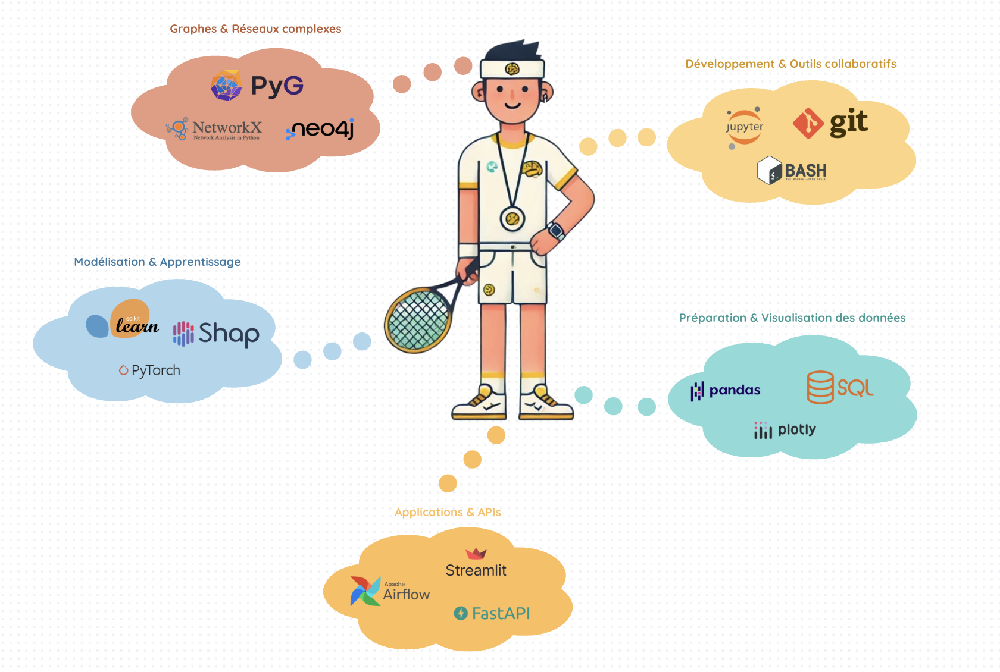

Lucas Potin
Data Scientist
Je travaille actuellement sur des problématiques d’analyse de graphes, de fouille de données et de détection de fraude.
Curriculum Vitae
📄 CV en Français 📄 CV in EnglishProfils professionnels
💻 GitHub 🔗 LinkedIn 📚 Google ScholarÀ propos de moi

Ingénieur en mathématiques appliquées (INSA Rouen) avec un double diplôme en science des données, j’ai progressivement orienté mon parcours vers la recherche appliquée. Ma thèse en data mining, réalisée au sein du LIA (Avignon), m’a permis d’explorer les liens entre graph mining, qualité de patterns et analyse de données publiques.
J’ai aussi eu l’occasion de travailler en entreprise (stage data chez Aubay), à l’international (James Hutton Institute en Écosse), et d’encadrer des projets étudiants. Ces expériences m’ont forgé un regard analytique, rigoureux mais pragmatique.
Aujourd’hui, je cherche à contribuer à des projets concrets en R&D ou en data science appliquée, où je peux valoriser mes compétences en fouille de graphes, machine learning et structuration de données complexes.
Ma stack technique
Petit aperçu des outils et bibliothèques que j’utilise régulièrement !
